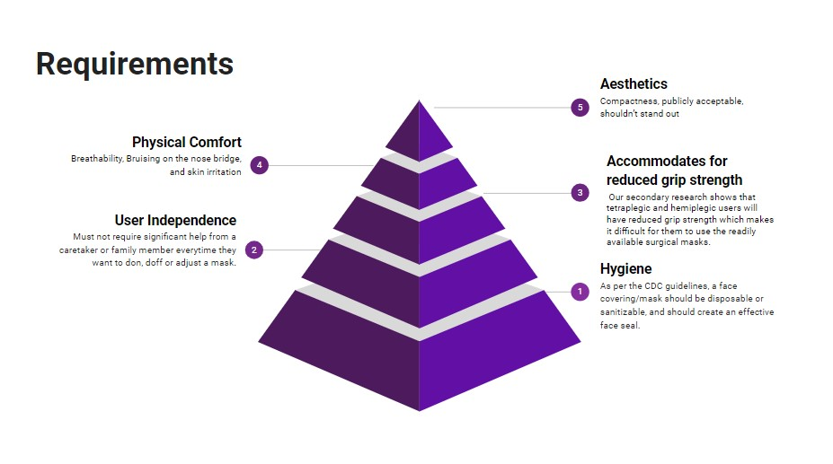
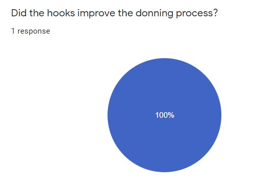
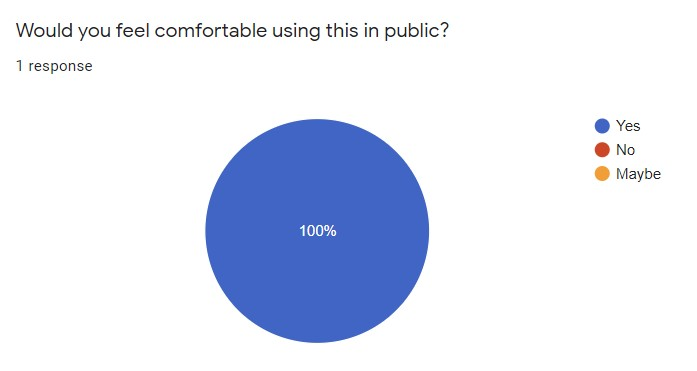

ShirleyRyan Abilitylab
Design Thinking Communication
Our key requirements for our solution was to prioritize the independence of the user and to ensure optimal hygiene through securely fitting the mask. Tetraplegic and hemiplegic individuals are more susceptible to COVID and other diseases so hygiene was a top priority.
We looked at how existing solutions for our users utilized different grip techniques or enhanced surface adhesion.
Our team thought we had very solid prototypes...
But in user testing it was clear that these prototypes did not work for our user.
Instead, our user feedback highlighted a clear solution: a prototype our team had written off as unfeasible due to its aesthetics.
 